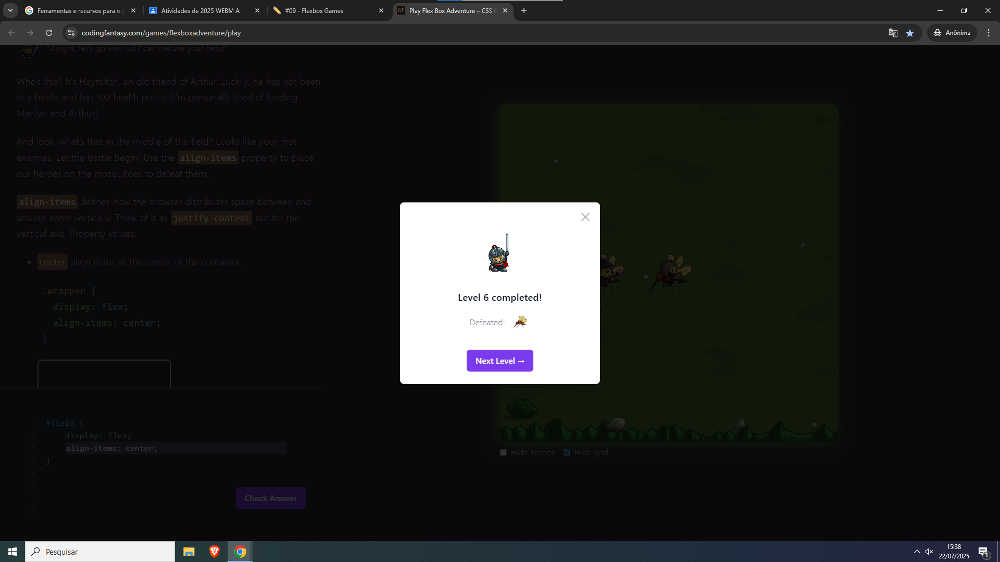
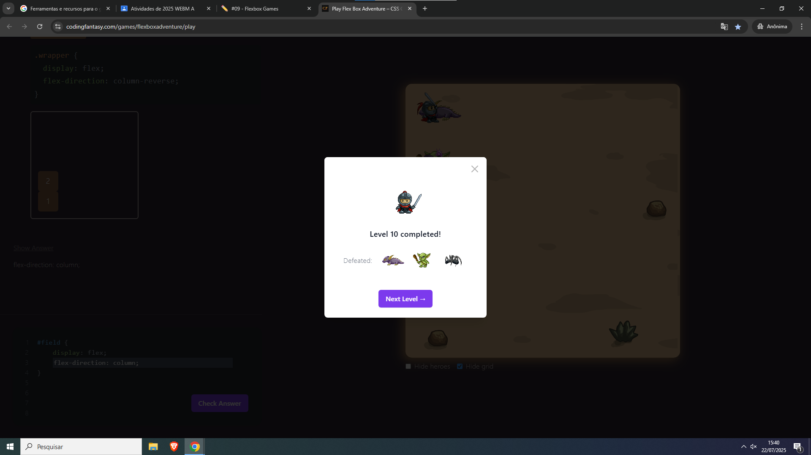
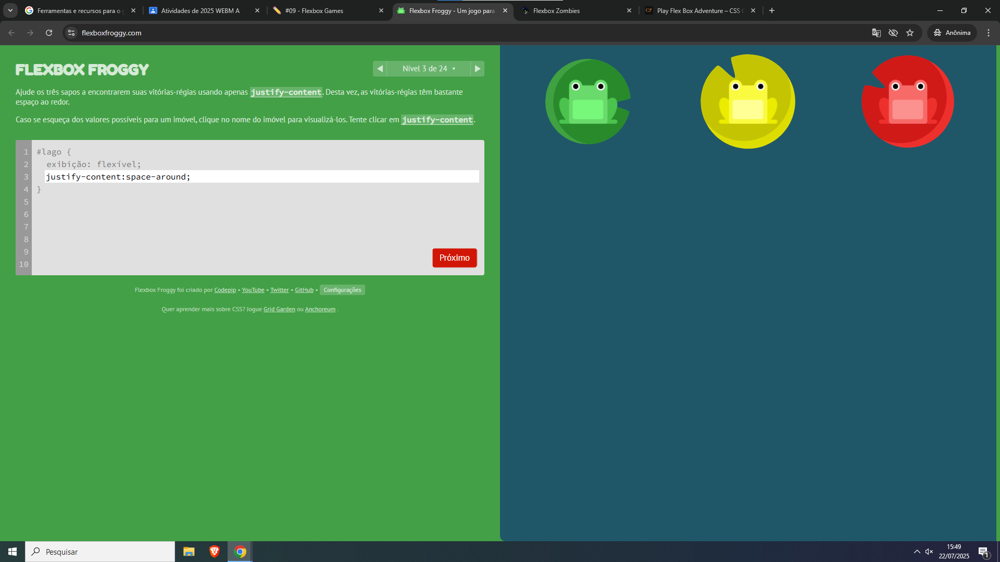
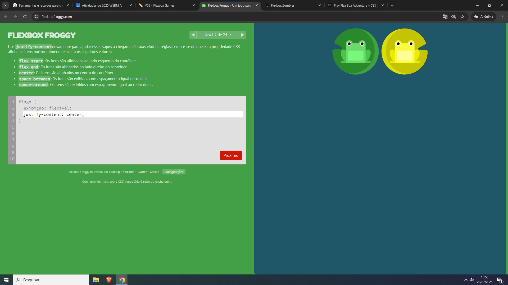
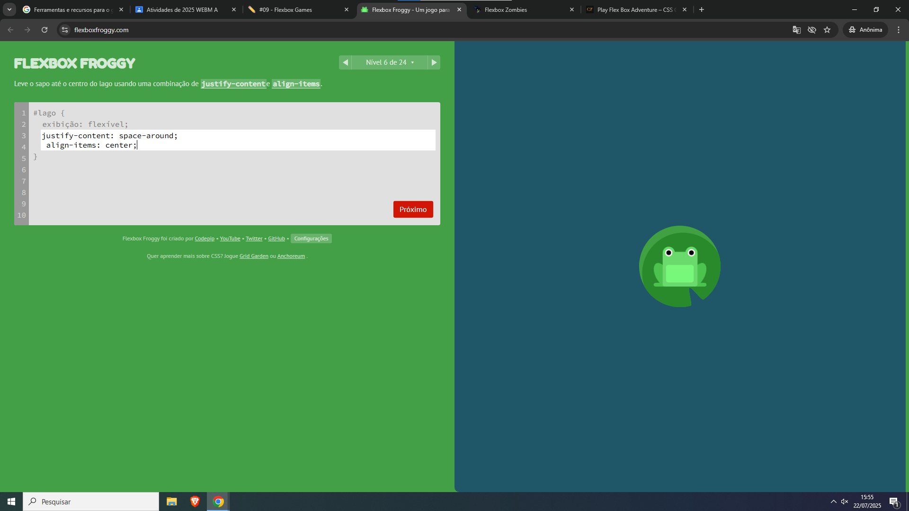

Amanda Rodrigues de Sousa
Play Flex Box Adventure-CSS Game to LearnFlexbox e Flexbox Froggy
Eu escolhi o Play Flex Box Adventure-CSS Game to LearnFlexbox, porque era bem facinho de jogar e porque no jogo tinha uma bruxinha linda igual a mim!! e meus amigos também eswcolheram esse.
Eu escolhi o Flexbox Froggy, porque Gabi, minha amiga da "b" jogou ele e disse que foi muito diveretido, eu nao gosteiiii, foi muito dificil, muito complicadoo, affeerrr
eu gostei, mas tive duvidas em como fazer pra pular o nivel
eu tive duvidas nesse, pedi ajuda pros colegas
nao tava sabendo como fazer, tive que pensar bastante
o joguinho dificil, me estressei nesse nivel
nao sei ingles, quase chorei pra fazer
tive dificuldade meus amigos me ajudaram